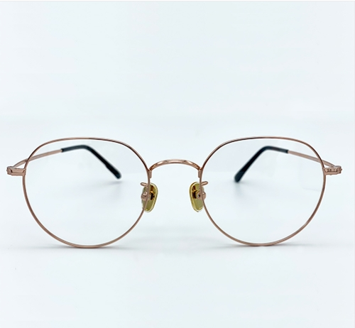

The K-film has a own special coating and kfilm is specialized in the development and distribution of products needed in daily life.
The blue light is a blue light source of Ultraviolet rays(UV rays) that comes out from the monitor, TV, SmartPhone and other home appliances that cause retinal damage to humans' eyes.

The light contained in sunlight that reaches to the ground is 10% of ultraviolet, 40 % of visible light, and 50% infrared ratio.
NIR(Near-infrared rays) has the longest wavelengths from the light and the Electromagnetic waves in the range of approximately are 700-1400nm that are invisible to the human eye.the NIR may cause cataract and retinal damage depending on the degree of exposure andthe NIR is already called the "Ageing light" in foreign countries.
When wearing the polarized lens glasses; the reason objects are visible is the rays from the sun are reflected on the surface of the water on flat ground and makes it difficult to stare at the object by the vertical vibration of polarization. That means the polarizing lens uses the polarizer perpendicular to the vertical vibration direction of the reflected ray to position the polarizing axis of the polarizing lens horizontally, eliminating glare by using interference of light.